Магия воды - одна из четырёх магий стихий в мире Аватара. С помощью магии воды, можно управлять водой и её агрегатными состояниями. Маги воды рождаются у жителей Племён Воды, разделённого на Северное Племя Воды, Южное Племя Воды и Болотное Племя Воды, а также у их потомков, живущих в других частях света. Согласно словам Айро, вода - это элемент изменения. В магии воды доминируют плавные, изящные движения, что отражает текучесть и изменчивость потоков воды.
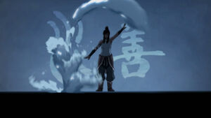Вода
Основы магии воды
| Манипуляции водой 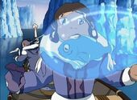 | Почти все приёмы магии воды связаны с перемещением и формированием масс воды согласно желанию мага. Начиная от простой левитации маги могут перемещать воду везде, даже не видя её, а также разделять водные массы, что позволяет им, например, ходить по дну озера или моря. Кроме этого, маг воды может манипулировать любыми жидкостями, содержащими воду. |
|---|---|
| Манипуляции температурой воды 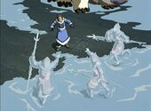 | Меняя температуру воды, маг воды может менять её агрегатное состояние, превращая в лёд или в пар. Это используется во многих техниках, чтобы, например, заморозить противника или наоборот растопить лёд под ним, создать твёрдые ледяные иглы или скрыть себя и своих союзников в тумане. |
| Манипуляции снегом/льдом 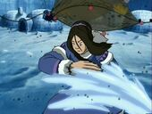 | Маг воды может перемещать снег и лёд также, как и обычную воду. Следует отметить, что крупнейшие поселения Племён Воды расположены на Северном и Южном полюсах, поэтому для них снег и лёд - это естественная среда. |
| Манипуляции давлением воды 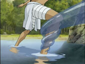 | Это позволяет магам воды использовать водяные струи, чтобы схватить противника, или создавать тонкие "линзы" высокого давления, которые могут резать металлы. Также повышая давление воды под собой маг воды способен ходить и бегать по поверхности водоёмов. |
Простые приёмы и техники
| Тянуть воду 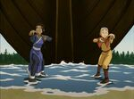 | Суть приёма состоит в том, чтобы плавными движениями перетянуть воду из источника ближе к себе. Это одна из базовых техник магии воды, с помощью которой ученики могут ощутить контроль над водной стихией. На самом деле это очень полезная техника, и её используют даже мастера магии воды. |
|---|---|
| Водяная струя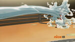 | В зависимости от уровня навыков мага с помощью этого приёма можно просто окатить противника водой "как из шланга" или создать мощный поток воды и сбить противника с ног. |
| Водяной кнут 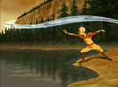 | Одна из простых и широко применяемых техник, заключающаяся в создании плотной и гибкой струи воды, которой можно ударить по противнику или обвить часть его тела. Форма и длина кнута определяется способностями мага и его навыками. Особенностью этой техники является то, что кнуты можно создавать не только руками, но и ногами, что демонстрировали и Катара, и Корра. |
| Волна 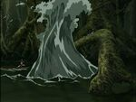 | Перемещая водные массы в самом источнике воды, маги могут создавать волны и направлять их в нужном направлении. Приём осуществляется медленным поднятием рук вверх, пока волна не достигнет нужного размера, потом в сторону, куда её необходимо направить. Это можно использовать как в сражении с противником, так и для перемещения по воде, например, для сёрфинга. |
| Стена/щит из воды 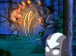 | Подняв большую массу воды перед собой, маг воды может заблокировать атаку противника. Этот же приём можно использовать наоборот, оградив самого противника водяным щитом. Особенностью техники является то, что для эффективного щита вода должна быть под давлением, иначе сильный противник может пробить его, как это случилось с Катарой в серии «Осада Севера, часть 1», когда она сражалась с Зуко. |
| Ледяные шипы 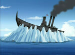 | Маги воды поднимают из воды или льда большие ледяные шипы. Их можно использовать в качестве оборонительного сооружения или вморозить в него противника. |